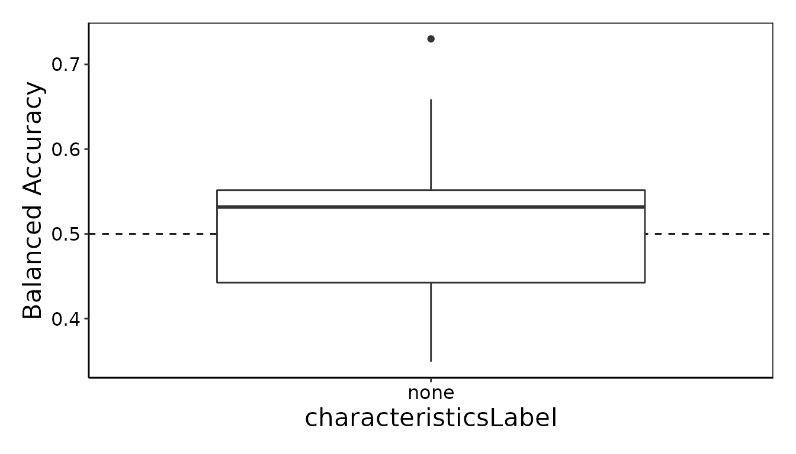
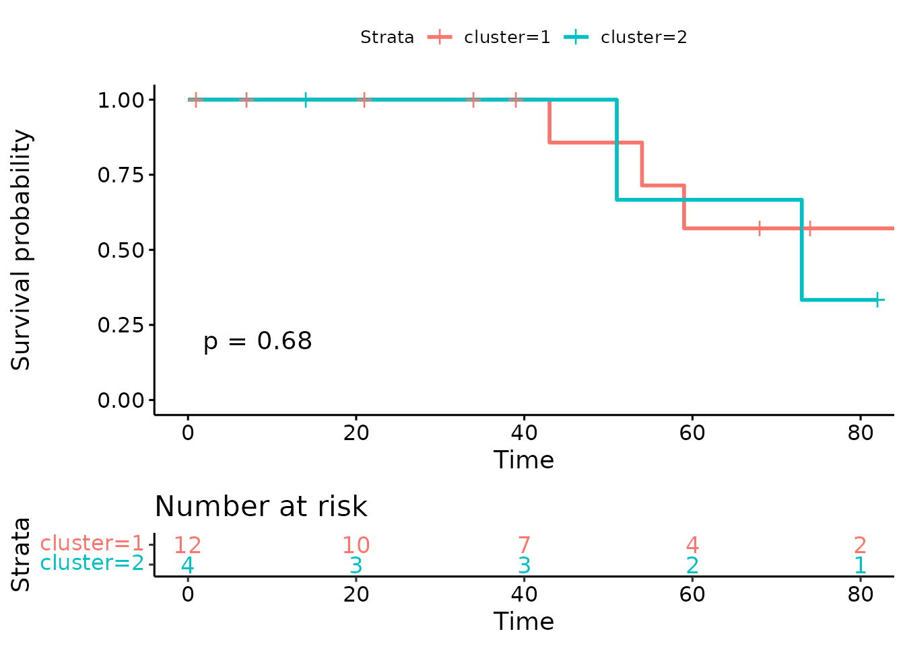

A detailed explanation of scFeatures' features
Source:vignettes/scFeatures_detail.Rmd
scFeatures_detail.RmdIntroduction
This vignette provides a detailed description of scFeatures, including description for each feature category, the expected output and case studies of using the generated features for classification task and survival analysis.
For a quick starting point (the TLDR version), please see the other vignette “Vignette - summary of scFeatures functions”.
Note that all scFeatures functions contain a ncores
argument that controls the number of cores. The default is 1 core.
If you wish to run downstream analysis using the generated features
(see “Vignette - association study”), please make sure that when you run
scFeatures, the sample is in the format of
a_cond_b. Where a is sample ID and
b is the condition, eg,
patient09_cond_nonresponder. This is so that we can
retrieve the sample ID and the corresponding condition when running the
analysis.
library(scFeatures)Quick run of scFeatures
scFeatures can be run using one line of code
scfeatures_result <- scFeatures(data), which generates a
list of dataframes containing all feature types in the form of samples x
features.
data <- readRDS(
system.file("extdata", "example_scrnaseq.rds", package = "scFeatures")
)
data <- process_data(data, normalise = TRUE) # perform normalisation
scfeatures_result <- scFeatures(data)
#> [1] "generating CCI features"The above function uses all default settings and generate all feature types. We provide an example below that describes how this can be done with a spatial proteomics dataset.
#---------------------------------------------------------------------------
# read in data
#---------------------------------------------------------------------------
data <- readRDS(
system.file("extdata", "example_scrnaseq.rds", package = "scFeatures")
)
# randomly generate some x and y coordinate to make this a
# toy "spatial proteomics" data
x <- sample(1:100, ncol(data) , replace = T)
y <- sample(1:100, ncol(data) , replace = T)
data <- makeSeurat(data, spatialCoords = list(x,y))
data <- process_data(data, normalise = T)
# select feature types to compute.
feature_types <- c(
"proportion_raw", "pathway_gsva", "L_stats", "gene_mean_celltype",
"gene_prop_aggregated"
)
scfeatures_result <- scFeatures(data,
feature_types = feature_types,
type = "spatial_p",
# set to user specified pathways.
geneset = list(
"pathway_a" = rownames(data)[1:50],
"pathway_b" = rownames(data)[51:100]
),
# by default uses top variable genes to generate the celltype
# specific gene expression feature, now set to user defined genes.
celltype_genes = data.frame(
celltype = c(rep("Naive T Cells" , 10), rep( "Cytotoxic CD8" , 10)),
marker = c( rownames(data)[1:10], rownames(data)[11:20])
),
# by default uses top variable genes to generate the overall
# aggregated gene expression feature category, now set to user
# defined genes.
aggregated_genes = rownames(data)[1:50],
# by default uses single core
ncores = 8
)scFeatures on single-cell RNA-seq data
For demonstration purpose, we provide a subsampled version of the melanoma pre-treatment dataset [1] as used in our manuscript.
scFeatures takes in data as a Seurat object, with the gene expression
stored in the assay RNA. The required metadata is the
celltype and sample label. The
condition label is optional, and is only required if users
wish to learn the difference of disease condition using the generated
features.
data <- readRDS(
system.file("extdata", "example_scrnaseq.rds", package = "scFeatures")
)
data <- process_data(data) # some pre-processing, including normalisation
# confirm the data contain cell types
unique(data$celltype)
#> [1] "Naive T Cells" "Cytotoxic CD8" "CD8, T Effector Memory"
# confirm the data contain samples
unique(data$sample)[1:5]
#> [1] "Pre_P8" "Pre_P27" "Pre_P7" "Pre_P20" "Pre_P3"
# disease conditions in this data
unique(data$condition)
#> [1] "Responder" "Non-responder"
# format the patient ID as `a_cond_b` eg, `patient09_cond_nonresponder`. This
# is so that we can retrieve the sample ID and the corresponding condition when
# running downstream analysis on the generated features
data$sample <- paste0(data$sample, "_cond_", data$condition)
unique(data$sample)[1:5]
#> [1] "Pre_P8_cond_Responder" "Pre_P27_cond_Non-responder"
#> [3] "Pre_P7_cond_Responder" "Pre_P20_cond_Non-responder"
#> [5] "Pre_P3_cond_Non-responder"Feature generation
Here we demonstrate the usage of scFeatures to extract features from
scRNA-seq data. Note that, for the type argument, the
currently supported options are:
* scrna : which stands for single-cell RNA-seq data *
spatial_p: which stands for spatial proteomics data
* spatial_t: which stands for spatial transcriptomics
data
By default, the type is set to scrna, therefore it is
not necessarily to specify the type when the input data is scRNA-seq
data.
Cell type proportions
- Detail:
For each sample, we calculate the proportion of each cell type:-
Proportion raw: the untransformed proportion.
-
Proportion logit: the logit-transformed proportion value, which is a common transformation used for proportional data.
-
Proportion ratio: calculates the ratio of proportion between two cell types.
-
- Expected output:
-
Proportion rawandProportion logit: the features are in the form of celltype a, celltype b, with the number representing proportions. -
Proportion ratio: the features are in the form of celltype a vs celltype b, celltype a vs celltype c, with the number representing the ratio between the two cell types.
-
feature_proportion_raw <- run_proportion_raw(data)
feature_proportion_logit <- run_proportion_logit(data)
feature_proportion_ratio <- run_proportion_ratio(data)Cell type specific gene expressions
-
Detail:
This feature category aggregate the cells across each cell type and then construct various features. By default, (if thefeaturesargument is not provided), we restrict to the top variable genes to reduce the dimensions of the feature. The argumentnum_top_genedetermines how many genes to include.-
Gene mean celltype: the cell type specific gene expression. -
Gene proportion celltype: for a particular gene, the percentage of cells in a cell type that it is expressed. -
Gene correlation celltype: correlation of expressions of two given genes in a cell type.
-
Alternatively, users can provide their own gene of interest to the
features argument.
- Expected output:
-
Gene mean celltype: the features are in the form of gene 1 celltype a, gene 2 celltype b … etc, with the number representing average gene expression of the given gene across the cells of the the given celltype. -
Gene proportion celltype: the features are in the form of gene 1 celltype a, gene 2 celltype b … etc, with the number representing average gene expression of the given gene across the cells of the the given celltype. -
Gene correlation celltype: the features are in the form of gene 1 vs gene 2 cell type a , gene 1 vs gene 3 cell type b … etc, with the numbers representing the correlation of the two given genes in the given cell type.
-
Note that mitochondria and ribosomal genes may not be as interesting
to look at. Therefore, users can choose to remove these genes using the
function remove_mito. This step is optional.
data_remove_mito <- remove_mito(data)
feature_gene_mean_celltype <- run_gene_mean_celltype(data_remove_mito)
# we can provide our own sets of genes
genes_of_interest <- data.frame(
marker = c("S100A11", "GZMB", "DUSP1"),
celltype = c(
"CD8, T Effector Memory",
"CD8, T Effector Memory",
"Naive T Cells"
)
)
feature_gene_prop_celltype <- run_gene_prop_celltype(
data_remove_mito,
genes = genes_of_interest
)
# we can change the number to pick ~10 top variables genes per cell type
feature_gene_cor_celltype <- run_gene_cor_celltype(
data_remove_mito,
num_top_gene = 10
)Cell type specific pathway expressions
- Detail:
This feature category constructs features relating to pathway (gene set) expression. By default (when thegenesetargument is not specified), we use the 50 hallmark gene set from msigdb. The users can also provide their geneset of interest in a list format, with each list entry containing a vector of the names of genes in a gene set.-
pathway_gsva: uses the GSVA function to calculate the gene set enrichment score for individual cells, then aggregates the scores across cells within a cell type. -
pathway_mean: averages the gene expression of genes in a pathway. -
pathway_prop: for the genes in a pathway, calculates the percentage of cells that these genes are expressed in each cell type.
-
- Expected output:
-
pathway_gsvathe features are in the form of pathway 1 celltype a, pathway 2 celltype b … etc, with the number representing the gene set enrichment score of a given pathway in cells from a given celltype.
-
pathway_meanthe features are in the form of pathway 1 celltype a, pathway 2 celltype b … etc, with the number representing the averaged expression of a given pathway in cells from a given celltype.
-
pathway_propthe features are in the form of pathway 1 celltype a, pathway 2 celltype b … etc, with the number representing the proportion of expression of a given pathway in cells from a given celltype.
-
Note that it is necessarily to indicate whether the species is “Homo sapiens” or “Mus musculus”. The default is “Homo sapiens”.
# This function can take a while. Therefore for larger datasets (eg, over
# 30,000 cells), we provide a subsample function to increase the speed.
feature_pathway_gsva <- run_pathway_gsva(
data,
geneset = NULL, species = "Homo sapiens", subsample = FALSE
)
feature_pathway_mean <- run_pathway_mean(data)
feature_pathway_prop <- run_pathway_prop(data)Cell type specific cell-cell communications
- Detail:
-
CCI: This uses theSingleCellSignalRpackage to calculate the cell-cell interaction score of ligand recepor pairs.
-
- Expected output:
-
CCI: The features are in the form of ligand 1 receptor 2 celltype a, ligand 1 receptor 2 celltype b … etc, with the numbers representing cell-cell interaction probability.
-
feature_CCI <- run_CCI(data) Overall aggregated gene expressions
Detail: The feature types in this category is calculated based on the aggregated expressions across all cells. The argument
num_top_genedetermines how many genes to include. By default (if thefeaturesargument is not provided), the algorithm picks the top variable genes.-
Expected output:
-
Gene mean: The features are in the form of gene 1, gene 2 … etc, with the numbers representing averaged gene expression across all cells.
-
Gene cor: The features are in the form of gene 1 vs gene 2, gene 1 vs gene 3 … etc, with the numbers representing correlation of gene expressions.
-
Gene prop: The features are in the form of gene 1, gene 2 … etc, with the numbers representing the proportion that the gene is expressed across all cells.
-
feature_gene_mean_aggregated <- run_gene_mean(data)
genes_of_interest <- c("TIGIT", "PDCD1")
feature_gene_cor_aggregated <- run_gene_cor(
data,
genes = genes_of_interest
)
# we can change this number to pick 100 top variable genes
feature_gene_prop_aggregated <- run_gene_prop(data, num_top_gene = 100)Classification of conditions using the generated features
To build disease prediction model from the generated features use
utilise ClassifyR.
The output from scFeatures is a matrix of sample x feature, ie, the
row corresponds to each sample, the column corresponds to the feature,
and can be directly used as the X. The order of the rows is
in the order of unique(data$sample).
Here we use the condition as the y to build
classification model on the disease condition.
# Using the feature type gene mean celltype as an example")
# inspect the first 5 rows and first 5 columns
feature_gene_mean_celltype[1:5, 1:5]
#> Naive T Cells--NOSIP Naive T Cells--LUC7L3
#> Pre_P8_cond_Responder 1.3403199 1.3253486
#> Pre_P27_cond_Non-responder 0.9504078 0.9565850
#> Pre_P7_cond_Responder 0.9230278 0.7445286
#> Pre_P20_cond_Non-responder 0.9472109 0.9359819
#> Pre_P3_cond_Non-responder 0.7099657 1.3188926
#> Naive T Cells--ARL6IP4 Naive T Cells--IL2RG
#> Pre_P8_cond_Responder 1.1861664 1.304897
#> Pre_P27_cond_Non-responder 0.0000000 1.018693
#> Pre_P7_cond_Responder 0.2737271 1.462253
#> Pre_P20_cond_Non-responder 0.4789126 1.944960
#> Pre_P3_cond_Non-responder 0.6994015 1.607346
#> Naive T Cells--SNRPD2
#> Pre_P8_cond_Responder 1.1722461
#> Pre_P27_cond_Non-responder 0.0000000
#> Pre_P7_cond_Responder 0.8139368
#> Pre_P20_cond_Non-responder 0.4753097
#> Pre_P3_cond_Non-responder 0.4793805
# inspect the dimension of the matrix
# this means that there are 12354 features in this feature type
dim(feature_gene_mean_celltype)
#> [1] 16 3642
# confirm that the rows in in the order of unique(data$sample)
all(rownames(feature_gene_mean_celltype) == unique(data$sample))
#> [1] TRUEWe recommend using ClassifyR::crossValidate to do
cross-validated classification with the extracted feaures.
library(ClassifyR)
# X is the feature type generated
# y is the condition for classification
X <- feature_gene_mean_celltype
y <- data@meta.data[!duplicated(data$sample), ]
y <- y[match(rownames(X), y$sample), ]$condition
# run the classification model using random forest
result <- ClassifyR::crossValidate(
X, y,
classifier = "randomForest", nCores = 8,
nFolds = 3, nRepeats = 20
)
ClassifyR::performancePlot(results = result)
scFeatures on spatial proteomics data
For demonstration purpose, we “generate” a spatial proteomics data from the single cell RNA-seq data by randomly generating some x and y - coordinates.
data <- readRDS(
system.file("extdata", "example_scrnaseq.rds", package = "scFeatures")
)
# randomly generate some x and y coordinate to make this a
# toy "spatial proteomics" data
x <- sample(1:100, ncol(data) , replace = T)
y <- sample(1:100, ncol(data) , replace = T)
data <- makeSeurat(data, spatialCoords = list(x,y))
data <- process_data(data, normalise = T)
# how the x- and y- coordinates look like
data$x_cord[1:5]
#> E6_P3_MMD4_L001 B2_P3_M91_L001 H1_P7_M60.B1_L001 E3_P1_M53_L001
#> 37 3 81 21
#> G3_P2_M17
#> 38Feature generation
Cell type specific proportions
For spatial proteomics, we need to set the type to
spatial_p
feature_proportion_raw <- run_proportion_raw(data, type = "spatial_p")
feature_proportion_logit <- run_proportion_logit(data, type = "spatial_p")
feature_proportion_ratio <- run_proportion_ratio(data, type = "spatial_p")Cell type specific gene expressions
By default, this feature category calculates the gene/protein expression based on the top 100 most variable genes/proteins per cell type. However, because this data only measured 38 proteins, all proteins will be used.
feature_gene_mean_celltype <- run_gene_mean_celltype(data, type = "spatial_p")
feature_gene_prop_celltype <- run_gene_prop_celltype(data, type = "spatial_p")
feature_gene_cor_celltype <- run_gene_cor_celltype(data, type = "spatial_p")Overall aggregated gene expressions
By default, this feature category calculates the gene/protein expression based on the top 1500 most variable genes/proteins. However, because in this data there are only 38 proteins, we will use all proteins.
feature_gene_mean_aggregated <- run_gene_mean(data, type = "spatial_p")
feature_gene_prop_aggregated <- run_gene_prop(data, type = "spatial_p")
feature_gene_cor_aggregated <- run_gene_cor(data, type = "spatial_p")Spatial metrics
- Detail:
This feature category is designed for spatial data and contains feature types commonly used for spatial analysis.-
L_function: the L values between the pairs of proteins are calculated using the L function defined in literature[2]. L value greater than zero indicates spatial attraction of the pair of proteins whereas L value less than zero indicates spatial repulsion. -
Morans_I: Moran’s I are calculated using the function defined in literature [3]. It calculates the spatial autocorrelation based on both the locations and values simultaneously. A value closer to 1 indicates clustering of similar values and a value closer to -1 indicates clustering of dissimilar values. A value of 0 indicates no particular clustering structure, ie, the values are spatially distributed randomly.
-
celltype_interaction: We find the nearest neighbours of each cell and the cell types of these neighbours. These are considered as spatial interaction pairs. The cell type composition of the spatial interaction pairs are used as features.
-
nn_correlation: Pearson’s correlation is calculated for the protein expression between a cell with its nearest neighbour cell for spatial proteomics.
-
- Expected output:
-
L_function: The features are in the form of protein 1 vs protein 2, protein 1 vs protein 3 … etc, with the numbers representing the L values.
-
Morans_I: The features are in the form of protein 1, protein 2 … etc, with the numbers representing Moran’s value. -
celltype_interaction: The features are in the form of protein 1 vs protein 2, protein 1 vs protein 3 … etc, with the numbers representing the proportion of each interaction pairs in a give sample. -
nn_correlation: The features are in the form of protein 1, protein 2 … etc, with the numbers representing Pearson’s correlation.
-
feature_L_stats <- run_L_function(data, type = "spatial_p")
feature_morans_I <- run_Morans_I(data, type = "spatial_p")
feature_celltype_interaction <- run_celltype_interaction(
data,
type = "spatial_p"
)
feature_nn_correlation <- run_nn_correlation(data, type = "spatial_p")Survival analysis using the generated features
Suppose we want to use the features to perform survival analysis, here we “generate” some random survival data.
library(survival)
library(survminer)
nncor <- t(feature_nn_correlation)
nncor <- nncor[, !colSums(nncor)==0]
# run hierarchical clustering
hclust_res <- hclust(
as.dist(1 - cor(nncor, method = "pearson")),
method = "ward.D2"
)
# generate some survival outcome
survival_day <- sample(1:100, ncol(nncor))
censoring <- sample(0:1, ncol(nncor), replace = T)
cluster_res <- cutree(hclust_res, k = 2)
metadata <- data.frame( cluster = factor(cluster_res),
survival_day = survival_day,
censoring = censoring)
# plot survival curve
fit <- survfit(
Surv(survival_day, censoring) ~ cluster,
data = metadata
)
ggsurv <- ggsurvplot(fit,
conf.int = FALSE, risk.table = TRUE,
risk.table.col = "strata", pval = TRUE
)
ggsurv
scFeatures on spatial transcriptomics data
For demonstration purpose, we also “generate” the spatial transciptomics from the single-cell RNA-seq data.
For spatial transcriptomics, the required information are
sample, x_cord and y_cord (the x-
and y- coordinates of each spot).
Additionally, there are two assays needed, the RNA,
which contains the gene expression of each spot and the
predictions.
The predictions assay is a matrix in the form of cell
types x spot, which stores the cell type probability of each spot. This
can be obtained from performing cell type prediction using reference
data, for example, using SCTransform from Seurat (see https://satijalab.org/seurat/articles/spatial_vignette.html#integration-with-single-cell-data-1).
The purpose of having this cell type probability matrix is due to
spatial transcriptomics assay contain multiple cells from multiple cell
type populations, and this cell type prediction is necessary for
generating cell type specific feature types.
data <- readRDS(
system.file("extdata", "example_scrnaseq.rds", package = "scFeatures")
)
# generate a toy "spatial transcriptomics" data
data$celltype <- NULL #spatial transcriptomics don't have celltype
# randomly generate some x and y coordinates
x <- sample(1:100, ncol(data) , replace = T)
y <- sample(1:100, ncol(data) , replace = T)
# for spatial transcriptomics, we need to estimate the number of cells per spot
data <- get_num_cell_per_spot(data)
# also need a dataframe of celltype probability at each spot
# here we randomly create one
nrow <- 5 #pretend there are 5 cell types
ncol <- ncol(data)
# Create a matrix of random numbers
matrix <- matrix(runif(nrow * ncol), nrow, ncol)
# Normalize the columns of the matrix so that each column sum to 1
prediction.scores <- sweep(matrix, 2, colSums(matrix), "/")
colnames(prediction.scores) <- colnames(data)
rownames(prediction.scores) <- c(paste0("celltype", 1:5))
# format the data using makeSeurat
data <- makeSeurat(data, spatialCoords = list(x,y), spotProbability = prediction.scores)
data <- process_data(data, normalise = T)
# how the prediction assay look like
# the rows contain the predicted cell type probability of each spot
data@assays$predictions[, 1]
#> E6_P3_MMD4_L001
#> prediction.score.celltype1 0.06454154
#> prediction.score.celltype2 0.18199502
#> prediction.score.celltype3 0.19232122
#> prediction.score.celltype4 0.38186122
#> prediction.score.celltype5 0.17928100
# confirm the data include samples
unique(data$sample)[1:5]
#> [1] "Pre_P8" "Pre_P6" "Pre_P27" "Pre_P7" "Pre_P20"
# conditions in this data
unique(data$condition)
#> [1] "Responder" "Non-responder"
# format the patient ID as `a_cond_b` eg, `patient09_cond_nonresponder`. This is
# so that we can retrieve the sample ID and the corresponding condition when
# running downstream analysis on the generated features
data$sample <- paste0(data$sample, "_cond_", data$condition)Feature generation
For spatial transcriptomics, each spot contains multiple cells and potentially from multiple cell types. Therefore, the implementation for the feature categories involving cell type specific features (i.e., cell type proportions, cell type specific gene expressions, cell type specific pathway expressions, spatial metrics) are different to their implementations for the single-cell based datasets (i.e., scRNA-seq and spatial proteomics) and described in details below.
Cell type proportions
Detail: While in spatial transriptomics, the measurement at each spot is taken from multiple cells, we can use the cell type probability matrix and the relative number of cells in each spot jointly to estimate the cell type proportion in each sample.
Expected output:
The output format is the same as for scRNA-seq data.
feature_proportion_raw <- run_proportion_raw(data, type = "spatial_t")
feature_proportion_logit <- run_proportion_logit(data, type = "spatial_t")
feature_proportion_ratio <- run_proportion_ratio(data, type = "spatial_t")Cell type specific gene expressions
Detail: We use the cell type probability to obtain the regression coefficients of each gene associated with each cell type.
Expected output: For each sample, the features are in the form of gene a celltype a, gene a celltype b … etc, with the number representing regression coefficient.
data_remove_mito <- remove_mito(data)
feature_gene_mean_celltype <- run_gene_mean_celltype(
data_remove_mito,
type = "spatial_t",
genes = rownames(data_remove_mito)[1:100] # to speed up the vignette generation
)Cell type specific pathway expressions
Detail: We use the approach above to obtain the regression coefficient of each cell type for each gene. The regression coefficients for all the genes involved in a particular pathway are then summed.
Expected output: For each sample, the features are in the form of pathway a celltype a, pathway a celltype b … etc, with the number representing the summation of regression coefficient.
feature_pathway_mean <- run_pathway_mean(
data,
geneset = NULL, species = "Homo sapiens", type = "spatial_t"
)Overall aggregated gene expressions
Detail:
This is based on the expression of genes across all cells.Expected output:
The output format is the same as for scRNA-seq data.
feature_gene_mean_aggregated <- run_gene_mean(data, type = "spatial_t")
feature_gene_prop_aggregated <- run_gene_prop(data, type = "spatial_t")
feature_gene_cor_aggregated <- run_gene_cor(data, type = "spatial_t")Spatial metrics
- Detail:
This feature category is designed for spatial data and contains feature types commonly used for spatial analysis.-
L_function: the L values between the pairs of genes are calculated using the L function defined in literature. We used the estimated cell type proportion in each spot to calculate the L function.
-
Morans_I: The implementation is the same as for spatial proteomics. -
celltype_interaction: We assume that the nearest neighbours should be the cells captured within each spot and consider them as the spatial interaction pairs. We then use the estimated cell type proportion in each spot to calculate the spatial interaction between cell types.
-
nn_correlation: Pearson’s correlation is calculated for the gene expression between a spot with its nearest neighbour spot.
-
- Expected output:
-
L_function: The features are in the form of gene 1 vs gene 2, gene 1 vs gene 3 … etc, with the numbers representing the L values.
-
Morans_I: The features are in the form of gene 1, gene 2 … etc, with the numbers representing Moran’s value. -
celltype_interaction: The features are in the form of gene 1 vs gene 2, gene 1 vs gene 3 … etc, with the numbers representing the proportion of each interaction pairs in a give sample. -
nn_correlation: The features are in the form of gene 1, gene 2 … etc, with the numbers representing Pearson’s correlation.
-
feature_L_stats <- run_L_function(data, type = "spatial_t")
feature_morans_I <- run_Morans_I(data, type = "spatial_t")
feature_celltype_interaction <- run_celltype_interaction(
data,
type = "spatial_t"
)
feature_nn_correlation <- run_nn_correlation(data, type = "spatial_t")Reference
- Sade-Feldman, M., Yizhak, K., Bjorgaard, S. L., Ray, J. P., de Boer, C. G., Jenkins, R. W., … & Hacohen, N.(2018). Defining T cell states associated with response to checkpoint immunotherapy in melanoma. Cell, 175(4), 998-1013.
- Besag, J. (1977) Discussion of Dr Ripley’s paper. Journal of the Royal Statistical Society, Series B, 39, 193–195.
- Moran, P. A. P. (1950).”Notes on Continuous Stochastic Phenomena”. Biometrika.37 (1) : 17–23. doi:10.2307/2332142
sessionInfo()
sessionInfo()
#> R version 4.2.1 (2022-06-23)
#> Platform: x86_64-pc-linux-gnu (64-bit)
#> Running under: Debian GNU/Linux 11 (bullseye)
#>
#> Matrix products: default
#> BLAS: /usr/lib/x86_64-linux-gnu/openblas-pthread/libblas.so.3
#> LAPACK: /usr/lib/x86_64-linux-gnu/openblas-pthread/libopenblasp-r0.3.13.so
#>
#> locale:
#> [1] LC_CTYPE=C.UTF-8 LC_NUMERIC=C LC_TIME=C.UTF-8
#> [4] LC_COLLATE=C.UTF-8 LC_MONETARY=C.UTF-8 LC_MESSAGES=C.UTF-8
#> [7] LC_PAPER=C.UTF-8 LC_NAME=C LC_ADDRESS=C
#> [10] LC_TELEPHONE=C LC_MEASUREMENT=C.UTF-8 LC_IDENTIFICATION=C
#>
#> attached base packages:
#> [1] stats4 stats graphics grDevices utils datasets methods
#> [8] base
#>
#> other attached packages:
#> [1] survminer_0.4.9 ggpubr_0.4.0
#> [3] ggplot2_3.3.6 ClassifyR_3.1.28
#> [5] survival_3.4-0 BiocParallel_1.30.4
#> [7] MultiAssayExperiment_1.22.0 SummarizedExperiment_1.26.1
#> [9] Biobase_2.56.0 GenomicRanges_1.48.0
#> [11] GenomeInfoDb_1.32.4 IRanges_2.30.1
#> [13] MatrixGenerics_1.8.1 matrixStats_0.62.0
#> [15] generics_0.1.3 scFeatures_0.99.9
#> [17] S4Vectors_0.34.0 BiocGenerics_0.42.0
#> [19] BiocStyle_2.24.0
#>
#> loaded via a namespace (and not attached):
#> [1] rsvd_1.0.5 ica_1.0-3
#> [3] Rsamtools_2.12.0 foreach_1.5.2
#> [5] SingleCellSignalR_1.8.0 lmtest_0.9-40
#> [7] rprojroot_2.0.3 crayon_1.5.2
#> [9] spatstat.core_2.4-4 MASS_7.3-58.1
#> [11] rhdf5filters_1.8.0 nlme_3.1-160
#> [13] backports_1.4.1 rlang_1.0.6
#> [15] XVector_0.36.0 ROCR_1.0-11
#> [17] irlba_2.3.5.1 limma_3.52.4
#> [19] filelock_1.0.2 rjson_0.2.21
#> [21] bit64_4.0.5 glue_1.6.2
#> [23] pheatmap_1.0.12 sctransform_0.3.5
#> [25] parallel_4.2.1 spatstat.sparse_3.0-0
#> [27] AnnotationDbi_1.58.0 spatstat.geom_3.0-3
#> [29] tidyselect_1.2.0 km.ci_0.5-6
#> [31] SeuratObject_4.1.2 fitdistrplus_1.1-8
#> [33] XML_3.99-0.11 tidyr_1.2.1
#> [35] zoo_1.8-11 GenomicAlignments_1.32.1
#> [37] xtable_1.8-4 magrittr_2.0.3
#> [39] evaluate_0.17 scuttle_1.6.3
#> [41] cli_3.4.1 zlibbioc_1.42.0
#> [43] rstudioapi_0.14 miniUI_0.1.1.1
#> [45] sp_1.5-0 bslib_0.4.0
#> [47] rpart_4.1.16 ensembldb_2.20.2
#> [49] shiny_1.7.2 GSVA_1.44.5
#> [51] BiocSingular_1.12.0 xfun_0.33
#> [53] multtest_2.52.0 cluster_2.1.4
#> [55] caTools_1.18.2 ggtext_0.1.2
#> [57] KEGGREST_1.36.3 tibble_3.1.8
#> [59] ggrepel_0.9.1 ape_5.6-2
#> [61] listenv_0.8.0 Biostrings_2.64.1
#> [63] png_0.1-7 future_1.28.0
#> [65] withr_2.5.0 bitops_1.0-7
#> [67] ranger_0.14.1 plyr_1.8.7
#> [69] GSEABase_1.58.0 AnnotationFilter_1.20.0
#> [71] pracma_2.4.2 dqrng_0.3.0
#> [73] pillar_1.8.1 RcppParallel_5.1.5
#> [75] gplots_3.1.3 GlobalOptions_0.1.2
#> [77] cachem_1.0.6 GenomicFeatures_1.48.4
#> [79] fs_1.5.2 DelayedMatrixStats_1.18.1
#> [81] vctrs_0.4.2 ellipsis_0.3.2
#> [83] tools_4.2.1 munsell_0.5.0
#> [85] DelayedArray_0.22.0 fastmap_1.1.0
#> [87] compiler_4.2.1 abind_1.4-5
#> [89] httpuv_1.6.6 rtracklayer_1.56.1
#> [91] plotly_4.10.0 rgeos_0.5-9
#> [93] GenomeInfoDbData_1.2.8 gridExtra_2.3
#> [95] edgeR_3.38.4 lattice_0.20-45
#> [97] deldir_1.0-6 utf8_1.2.2
#> [99] later_1.3.0 dplyr_1.0.10
#> [101] BiocFileCache_2.4.0 jsonlite_1.8.2
#> [103] scales_1.2.1 graph_1.74.0
#> [105] ScaledMatrix_1.4.1 carData_3.0-5
#> [107] pbapply_1.5-0 sparseMatrixStats_1.8.0
#> [109] genefilter_1.78.0 lazyeval_0.2.2
#> [111] promises_1.2.0.1 car_3.1-0
#> [113] R.utils_2.12.0 goftest_1.2-3
#> [115] spatstat.utils_3.0-1 reticulate_1.26
#> [117] rmarkdown_2.17 pkgdown_2.0.6
#> [119] cowplot_1.1.1 textshaping_0.3.6
#> [121] statmod_1.4.37 Rtsne_0.16
#> [123] uwot_0.1.14 igraph_1.3.5
#> [125] HDF5Array_1.24.2 proxyC_0.3.3
#> [127] yaml_2.3.5 systemfonts_1.0.4
#> [129] htmltools_0.5.3 memoise_2.0.1
#> [131] BiocIO_1.6.0 Seurat_4.2.0
#> [133] locfit_1.5-9.6 viridisLite_0.4.1
#> [135] digest_0.6.29 assertthat_0.2.1
#> [137] mime_0.12 rappdirs_0.3.3
#> [139] KMsurv_0.1-5 SIMLR_1.22.0
#> [141] RSQLite_2.2.18 future.apply_1.9.1
#> [143] data.table_1.14.2 blob_1.2.3
#> [145] R.oo_1.25.0 survMisc_0.5.6
#> [147] ragg_1.2.3 splines_4.2.1
#> [149] labeling_0.4.2 Rhdf5lib_1.18.2
#> [151] ProtGenerics_1.28.0 gridtext_0.1.5
#> [153] RCurl_1.98-1.9 broom_1.0.1
#> [155] hms_1.1.2 rhdf5_2.40.0
#> [157] colorspace_2.0-3 DropletUtils_1.16.0
#> [159] BiocManager_1.30.18 shape_1.4.6
#> [161] sass_0.4.2 Rcpp_1.0.9
#> [163] bookdown_0.30 RANN_2.6.1
#> [165] circlize_0.4.15 fansi_1.0.3
#> [167] parallelly_1.32.1 R6_2.5.1
#> [169] grid_4.2.1 ggridges_0.5.4
#> [171] lifecycle_1.0.3 bluster_1.6.0
#> [173] curl_4.3.3 ggsignif_0.6.3
#> [175] leiden_0.4.3 jquerylib_0.1.4
#> [177] SpatialExperiment_1.6.1 Matrix_1.5-3
#> [179] EnsDb.Mmusculus.v79_2.99.0 desc_1.4.2
#> [181] RcppAnnoy_0.0.19 RColorBrewer_1.1-3
#> [183] iterators_1.0.14 spatstat.explore_3.0-5
#> [185] stringr_1.4.1 htmlwidgets_1.5.4
#> [187] markdown_1.1 beachmat_2.12.0
#> [189] polyclip_1.10-0 biomaRt_2.52.0
#> [191] purrr_0.3.5 mgcv_1.8-40
#> [193] globals_0.16.1 patchwork_1.1.2
#> [195] spatstat.random_3.0-1 progressr_0.11.0
#> [197] codetools_0.2-18 metapod_1.4.0
#> [199] gtools_3.9.3 prettyunits_1.1.1
#> [201] SingleCellExperiment_1.18.1 dbplyr_2.2.1
#> [203] EnsDb.Hsapiens.v79_2.99.0 RSpectra_0.16-1
#> [205] R.methodsS3_1.8.2 gtable_0.3.1
#> [207] DBI_1.1.3 tensor_1.5
#> [209] httr_1.4.4 highr_0.9
#> [211] KernSmooth_2.23-20 stringi_1.7.8
#> [213] progress_1.2.2 reshape2_1.4.4
#> [215] msigdbr_7.5.1 farver_2.1.1
#> [217] annotate_1.74.0 magick_2.7.3
#> [219] xml2_1.3.3 BiocNeighbors_1.14.0
#> [221] AUCell_1.18.1 restfulr_0.0.15
#> [223] scattermore_0.8 scran_1.24.1
#> [225] bit_4.0.4 spatstat.data_3.0-0
#> [227] pkgconfig_2.0.3 babelgene_22.9
#> [229] rstatix_0.7.0 knitr_1.40